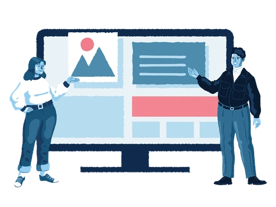
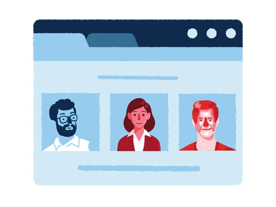
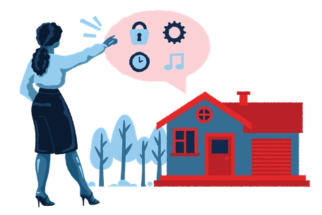
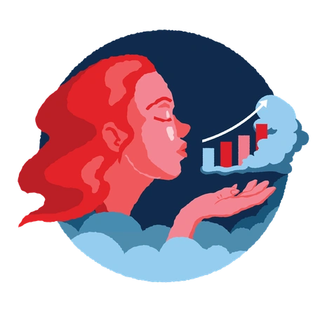

Selected work

Design Systems · NDA · Pushpay
Design system: one system across all 7 products
Fragmented product libraries unified into a single tokenised ecosystem.
From 4 libraries to 1, supporting 7 products

Product UX · NDA · Pushpay
Groups: the rebuild that reshaped the design system
Modernising ChMS Groups on Prism: the catalyst for our 2026 DS work.
ChMS · 7 sub-tabs · rebuilt on Prism

AI Workflows · Systems
AI workflow: work that couldn't be justified, now possible
An AI-augmented DS pipeline for audits, docs, and migrations at scale.
88% faster migration · 92% faster docs · 17k variables in a day

Product UX · NDA · Pushpay
App Studio: one product connecting the whole ecosystem
A white-label B2B2C platform letting churches build trusted apps for their communities.
4 product teams · 6 features shipped · 2 user types
Product UX · Media
Resi On Demand: streaming built into white-label community apps
The on-demand video layer inside the branded apps communities build in App Studio.
Resi × Pushpay · Shipped · Live

AI · Data UX · NDA · Pushpay
Giving analytics: making church data speak plainly
End-to-end AI-powered analytics, from data taxonomy to surfaced insight.
AWS QuickSight · Data taxonomy · Future vision